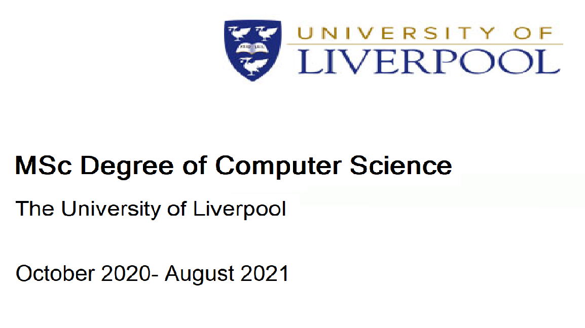

Certificates
MSc Degree of Computer Science

A chance to broaden my understanding of computer software, learn skills applicable to industry such as E-commerce, networking and algorithm design and also apply my existing knowledge of Mathematical methods towards writing intelligent software.
BSc Degree of Mathematics

Developed strong problem solving and logical thinking skills. Advanced courses covering statistical methods such as regression, time series and Randomised Controled trials taught me to use computer software to solve real world problems.
C Programming- Master the C Language

Recently completed a Udemy course where I learned to work with pointers and character strings. Was a great chance to deepen my understanding of how a computer works.
Responsive Web Design

Learned the inns and outs of HTML and CSS. Was a foundation for later learning JavaScript and then building websites.